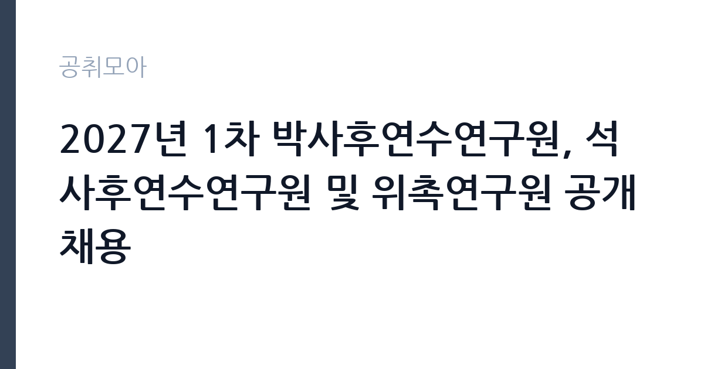

[공공기관] 2027년 1차 박사후연수연구원, 석사후연수연구원 및 위촉연구원 공개채용
한국전자통신연구원 · 광주 · 마감 2026-11-20 (D-16) · 출처 나라일터

한눈에 보는 모집 조건
| 기관 | 한국전자통신연구원 |
|---|---|
| 공고명 | 2027년 1차 박사후연수연구원, 석사후연수연구원 및 위촉연구원 공개채용 |
| 고용형태 | 기간제 |
| 근무지 | 광주 |
| 게시일 | 2026-11-04 |
| 마감일 | 2026-11-20 (D-16) |
지원자격, 이렇게 읽으세요
- 박사후연수연구원 53명 석사후연수연구원 54명 위촉연구원 23명
- 접수 ~2026-11-20 마감
- 세부 조건은 원문 공고문 확인
기간제 근로자는 근로계약 기간이 정해진 신분입니다. 계약 기간과 갱신 가능 여부가 근로계약서에 명시되며 기간 만료 시 근로관계가 종료됩니다. 결원 보충이나 특정 사업 기간에 맞춰 채용되는 경우가 많아 업무 범위가 명확합니다. 이번 공고는 한국전자통신연구원에서 직접 진행하는 자체 전형으로, 응시자격과 제출서류는 공고문에 항목별로 제시됩니다. 고용형태는 계약직(연수직)으로 명시되어 있고, 모집분야별 계약기간이 붙임 자료에 정리되어 있습니다. 공통 자격은 국가공무원법 제33조와 연구원 인사규정 제10조의 임용 결격사유가 없는 사람, 부패방지법 제82조의 취업제한 대상이 아닌 사람, 국가연구개발사업 참여 제한이 없는 사람, 남성은 군필 또는 면제자, 임용예정일부터 정상 근무가 가능한 사람입니다. 박사후연수는 박사 학위, 석사후연수는 석사 학위, 위촉연구원은 해당 분야 학위나 경력이 요건이 됩니다. 전형은 서류전형 3배수 선발 후 전공(업적평가) 면접으로 이어지는 구조입니다. 서류는 접수 마감 이후 보완이 되지 않으므로 자격 요건과 증빙 서류를 마감 전에 모두 갖춰야 합니다. 공고문에 명시된 우대 사항은 해당 여부를 확인해 증빙을 첨부해야 가점이 반영됩니다. 응시 자격 판단이 애매하다면 접수 전에 채용 담당 부서로 문의하는 편이 안전합니다. 서류 제출 후에는 소명 기회가 없습니다.
이 공고의 포인트
이 공고의 첫 번째 포인트는 고용 형태입니다. 계약 기간이 정해져 있어 근무 종료 시점이 명확합니다. 그만큼 짧은 기간에 어떤 실적을 남길지가 중요해집니다. 두 번째는 업무 범위가 명확하다는 점입니다. 박사후·석사후·위촉연구원 직무로 채용되므로 배치 이후 담당 업무가 크게 흔들리지 않습니다. 세 번째는 근무지입니다. 광주 지역 근무로 수도권 공고에 비해 지원자 분포가 넓지 않아 상대적으로 경쟁이 분산되는 경우가 있습니다. 같은 기관의 다른 공고와 접수 기간이 겹치므로 중복 지원 가능 여부를 확인해야 합니다. 선발 인원이 53명으로 규모가 있어 서류와 면접 점수를 함께 관리하는 전략이 필요합니다.
전형은 어떻게 진행되나
서류전형과 면접전형 외에 직무수행능력 평가가 붙는 경우가 있습니다. 평가 방식은 공고문에 구체적으로 적혀 있으므로 어떤 항목에 배점이 높은지 먼저 파악하십시오. 면접에서는 지원 동기보다 실제 업무 경험에 대한 질문이 많고, 답변의 구체성이 평가를 가릅니다. 전형 일정은 서류 마감 이후 빠르게 진행되므로 연락 가능한 번호를 정확히 기재하고 문자와 메일을 수시로 확인해야 합니다. 최종 단계에서는 결격사유 조회와 신체검사가 진행됩니다. 경력 증명서에 직무 내용이 적혀 있지 않으면 인정받지 못할 수 있으므로 상세 기재를 요청하십시오.
원문에서 확인한 전형 방식
한국전자통신연구원(ETRI)은 지난 1976년 설립된 이래 끊임없는 연구와 노력으로 대한민국 정보통신산업의 눈부신 성장을 이끌어온 국내 최대 ICT(정보통신기술) 정부출연연구기관입니다. 대한민국 미래사회의 국가지능화에 기여할 핵심 인재를 모집합니다. 1. 채용분야 ○ 고용형태: 계약직(연수직) ○ 채용직종 및 모집인원 - 박사후연수연구원: 47개 모집분야, 53명 이내 - 석사후연수연구원: 46개 모집분야, 54명 이내 - 위촉연구원: 16개 모집분야, 23명 이내 ○ 수행직무 : 관련링크 참조 (파일첨부 용량 초과) ○ 근무기간 - 모집분야별 계약기간에 따름(붙임1, 붙임2 참조) 2. 지원자격 : 세부내용 붙임1 참조 ○ 공통 - 국가공무원법 제33조(결격사유)와 연구원 규정(인사규정 제10조)의 임용 결격사유가 없는 자로 해외여행에 결격사유가 없는 자 -「부패방지 및 국민권익위원회의 설치와 운영에 관한 법률」 제82조(비위면직자 등의 취업제한)에 해당하지 않는 자 - 국가연구개발사업 참여 제한이 없는 자 - 병역의무 대상자(남성)는 군필자 또는 면제자 - 임용(예정)일부터 정상근무가 가능한 자 3. 전형절차 ○서류전형(3배수) → 전공(업적평가)면접(1
이런 분께 추천해요
- 박사·석사 학위 또는 해당 분야 연구 경력을 갖춘 분
- 논문·특허 등 연구 실적을 증빙할 수 있는 분
- 모집분야별 계약기간과 직무를 확인한 분
지원 전 체크리스트
- 응시자격 요건과 경력 기준을 충족하는가 — 경력은 증명서로 입증해야 합니다
- 계약 기간과 근무 시작일·종료일을 확인했는가
- 제출서류 목록을 모두 준비했는가 — 누락 시 서류 단계에서 탈락합니다
- 접수 마감 2026-11-20 이전에 접수 방식을 확인해 제출했는가
모집 일정과 제출 타이밍
접수 마감은 2026-11-20이고 공고는 2026-11-04에 게시되었습니다. 준비 기간 16일 안에 서류 작성, 증빙 발급, 접수를 모두 마쳐야 하므로 주말을 포함해 일정을 미리 나누는 것이 좋습니다. 특히 경력 기술서나 직무수행계획서를 요구하는 공고는 작성에 시간이 걸리므로 첫날 초안을 잡으십시오. 서류 합격자 발표와 면접 사이 간격이 짧은 경우가 많아 면접 예상 질문은 서류 제출 전에 정리해 두는 편이 유리합니다. 마감 직전에는 접속이 몰리므로 여유를 두고 제출하십시오. 마감 이후에는 어떤 사유로도 접수가 인정되지 않으므로 하루 전 제출을 목표로 하십시오. 광주 근무지는 대중교통 노선이 제한적인 구역이 있어 통근 수단을 미리 점검하십시오. 마감까지 여유가 있어 자격 요건을 천천히 확인하고 준비할 수 있습니다. 선발 인원이 한 자릿수를 넘어 서류와 면접 점수를 함께 관리하는 전략이 필요합니다.
직무 이해하기: 공공기관
한국전자통신연구원(ETRI)은 1976년 설립된 국내 최대 ICT 정부출연연구기관으로, 국가지능화를 목표로 연구를 수행합니다. 이번 공고는 박사후연수연구원 47개 분야 53명 이내, 석사후연수연구원 46개 분야 54명 이내, 위촉연구원 16개 분야 23명 이내를 함께 모집하는 대규모 채용입니다. 연수연구원은 배정된 연구실에서 과제를 수행하며 논문 작성과 특허 출원, 기술 이전을 지원합니다. 위촉연구원은 특정 과제의 실무 연구를 맡습니다. 모집분야별로 수행직무와 계약기간이 다르므로 지원 전에 붙임 자료의 분야 목록을 확인해야 합니다. 업무 매뉴얼과 지침이 문서로 정리되어 있어 절차를 익히면 반복 업무는 빠르게 손에 붙습니다.
자기소개서 작성 팁
지원서는 연구 업적을 과제 단위로 정리하는 것이 효과적입니다. 수행한 연구의 주제, 사용한 방법론, 도출한 결과와 기여도를 한 문단씩 쓰십시오. ETRI의 주요 연구 분야와 본인 연구를 연결하는 부분이 특히 중요합니다. 연수 기간 동안 달성할 목표를 수치나 산출물 형태로 제시하면 준비도가 드러납니다. 구성은 지원 동기, 직무 경험, 기여 방안 순서가 무난합니다. 지원 동기는 한국전자통신연구원의 사업 중 본인이 관심을 가진 부분을 한 가지로 좁혀 서술하고 추상적인 표현은 줄이십시오. 직무 경험은 담당했던 업무와 규모, 결과를 수치로 제시하면 설득력이 올라갑니다. 기여 방안은 입사 후 첫 3개월과 1년 계획으로 나눠 쓰면 준비도가 드러납니다.
면접 준비 포인트
면접에서는 전공 지식과 연구 업적을 확인합니다. 수행한 연구의 가설과 검증 방법, 결과의 의의를 구체적으로 설명해야 합니다. 지원 분야의 연구 주제와 본인 경험을 어떻게 연결하는지도 질문 대상입니다. 논문·특허 실적은 증빙 자료로 제시할 수 있게 준비하십시오. 모집분야가 세분화되어 있으므로 지원한 분야의 직무를 정확히 이해하고 가야 합니다. 답변은 상황, 판단, 조치의 순서로 정리하면 전달이 분명해집니다. 모르는 질문에는 모른다고 밝히고 확인 방법을 제시하는 편이 억지 답변보다 낫습니다. 마지막에는 근무 의사와 함께 2026-11-20 이후 일정에 언제든 응할 수 있다는 점을 전달하십시오. 답변 시간이 짧게 정해져 있는 경우가 있으므로 핵심 문장을 먼저 말하고 근거를 붙이는 방식이 유리합니다.
급여·근무조건 읽는 법
ETRI는 정부출연연구기관으로 자체 임금 규정을 적용합니다. 연수연구원은 연수직 신분으로 별도 기준의 연수 지원금이 지급되고, 위촉연구원은 과제 인건비 범위에서 보수가 정해집니다. 계약기간이 분야별로 다르므로 월 보수와 계약 개월 수를 곱해 총액으로 비교해야 합니다. 구체적인 금액은 공고문 처우 항목과 붙임 자료에서 확인해야 하며, 확인되지 않은 금액은 이 글에서 제시하지 않습니다. 2026년 적용 최저임금은 시급 10,320원, 월 환산 2,156,880원(주 40시간·209시간 기준)입니다. 고용노동부 고시 제2025-47호로 확정된 금액입니다. 공고문에 금액이 제시되지 않은 항목은 원문 보수표나 처우 설명에서 확인해야 하며 확인되지 않은 수치는 쓰지 않는 것이 원칙입니다. 비교할 때는 월 급여뿐 아니라 상여·명절휴가비·복지포인트·초과근무수당까지 포함한 연간 총액으로 계산하십시오. 기간제라면 계약 기간 동안의 총액을, 무기계약이라면 호봉 상승과 정년까지의 누적 소득을 기준으로 판단하는 편이 정확합니다.
자주 묻는 질문
- 선발 인원은 몇 명인가요?
공고문 기준 53명입니다. 직종별로 인원이 나뉘는 경우가 있으니 모집분야 항목을 함께 확인하십시오. - 근무지는 어디인가요?
광주 지역의 한국전자통신연구원 소속 근무지입니다. 세부 주소와 출퇴근 조건은 원문 공고문에서 확인할 수 있습니다. - 보수는 얼마인가요?
채용 신분(기간제)과 기관 임금 규정에 따라 정해지며 구체적인 금액은 공고문 처우 항목에 제시됩니다. 금액이 공개되지 않은 경우에는 원문의 보수표를 확인하십시오.
함께 보면 좋은 공고
[공공기관] 한국농어촌공사 영산강사업단 공무직(청소원) 보훈 장애 제한경쟁 채용공고 — 마감 2026-11-20[공공기관] 서울대학교치과병원 2027년 상반기 정규직(원무직) 채용 공고 — 마감 2026-11-18[공공기관] 서울대학교치과병원 2027년 상반기 정규직(운영지원직) 채용 공고 — 마감 2026-11-18출처: 나라일터 공개정보를 바탕으로 공취모아가 정리한 안내글입니다. 모집 조건·일정은 변경될 수 있으니 지원 전 반드시 원문 공고문을 확인하세요. 본 글은 정보 제공용이며 합격을 보장하지 않습니다.